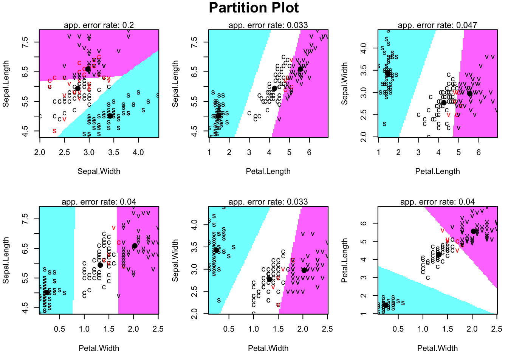

Chapter 2 JUST
Using the entire dataset
Let’s now use all 150 observations (with three populations: setosa, virginica, vertosa), and all four measurements.
## Call:
## lda(Species ~ ., data = iris)
##
## Prior probabilities of groups:
## setosa versicolor virginica
## 0.3333333 0.3333333 0.3333333
##
## Group means:
## Sepal.Length Sepal.Width Petal.Length Petal.Width
## setosa 5.006 3.428 1.462 0.246
## versicolor 5.936 2.770 4.260 1.326
## virginica 6.588 2.974 5.552 2.026
##
## Coefficients of linear discriminants:
## LD1 LD2
## Sepal.Length 0.8293776 0.02410215
## Sepal.Width 1.5344731 2.16452123
## Petal.Length -2.2012117 -0.93192121
## Petal.Width -2.8104603 2.83918785
##
## Proportion of trace:
## LD1 LD2
## 0.9912 0.0088We will delay discussion of what the reported coefficients mean, and how to visualize lda, until after we have seen Fisher’s linear discriminant analysis in the next section.
But we can use the klaR package to visualize a little of what LDA does. The partimat command provides an array of figures which shows the classification based on every combination of two variables (i.e. it does LDA for each pair of variables).
library(klaR)
library(plyr)
iris$Species_new= revalue(iris$Species, c("versicolor"="color"))
partimat(Species_new ~ Sepal.Length + Sepal.Width + Petal.Length + Petal.Width,
data=iris, method="lda")
Note that I renamed the versicolor species as color so that the differt species appear more clearly in the plots.
2.0.1 Could do prediction accuracy here?
2.0.2 Quadratic Discriminant Analysis (QDA)
We have seen that in the case where the populations all share a common covariance matrix, \(\boldsymbol{\Sigma}\), that the decision boundaries are linear (i.e. hyperplanes). We also saw in example ?? in a one-dimensional example that when the two populations had different variances we found a quadratic decision boundary.
In general, if we allow the variances to differ between populations, so that we model \(\mathbf x\sim N_p(\mu_k, \boldsymbol{\Sigma}_k)\) for population \(k\), then we can no longer ignore the determinant of the covariance matrix in the likelihood (see Equation (1.3)). In this case, the decision rule is \[ d(\mathbf x)=\arg\max_k \left(-\frac{1}{2} \log |\boldsymbol{\Sigma}_k| - \frac{1}{2}(\mathbf x-{\boldsymbol{\mu}}_k)^\top \boldsymbol{\Sigma}_k^{-1} (\mathbf x-{\boldsymbol{\mu}}_k)+\log \pi_k\right). \]
We cannot ignore the quadratic term in \(\mathbf x\) here as it depends upon the population indicator \(k\). Thus in this case we get a quadratic decision boundary rather than a linear one.
The qda function in the MASS package implements quadratic discriminant analysis…..
But you can often get similar result by just including quadratic terms in LDA……..
2.0.2.1 Iris example continued
qda.iris <- qda(Species ~ Sepal.Length + Sepal.Width + Petal.Length + Petal.Width, iris)
qda.iris #s## Call:
## qda(Species ~ Sepal.Length + Sepal.Width + Petal.Length + Petal.Width,
## data = iris)
##
## Prior probabilities of groups:
## setosa versicolor virginica
## 0.3333333 0.3333333 0.3333333
##
## Group means:
## Sepal.Length Sepal.Width Petal.Length Petal.Width
## setosa 5.006 3.428 1.462 0.246
## versicolor 5.936 2.770 4.260 1.326
## virginica 6.588 2.974 5.552 2.026partimat(Species ~ Sepal.Length + Sepal.Width + Petal.Length + Petal.Width, data=iris, method="qda")